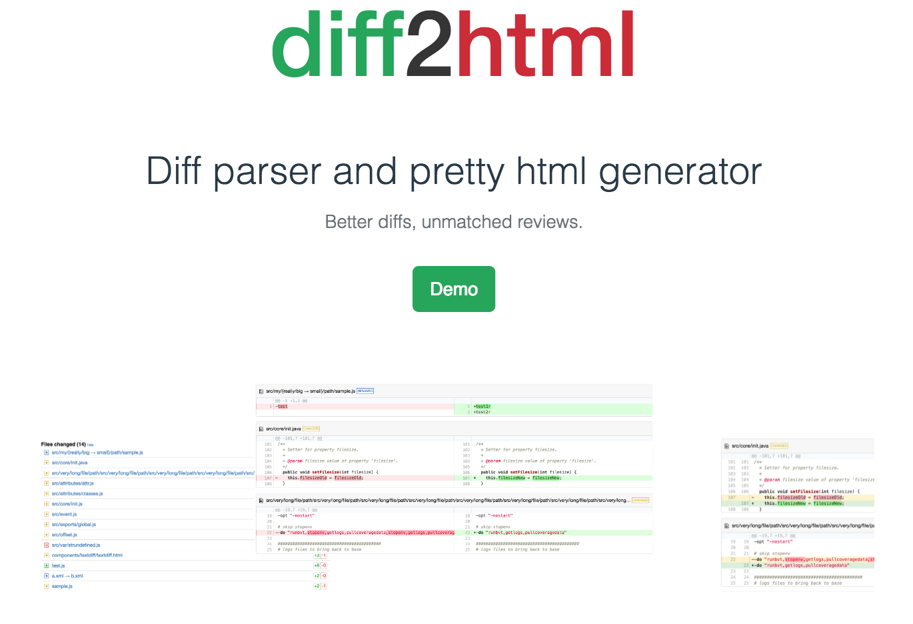

Welcome to my web page,
Here you can find more about who I am and what I do.
If you want to reach me, just try any of my contacts.
My name is Rodrigo Fernandes, I grew up in a little village in the middle of Portugal.
When I was 17, I moved to Lisbon to start my Master degree (MSc) in
Information Systems and Computer Engineering at Instituto Superior Técnico (IST), Lisboa.
I like programming, listen to (almost) every genre of music, play Futsal,
play table tennis, take long walks, do geocaching and hang out with my friends.
I'm a happy, sometimes shy, other times crazy, computer geek.
Programming Skills
I earned some skills, during my degree, in C, C++, Java, C#, and SQL.
Also developed using Scheme, Assembly, Prolog and Lisp.
Now, I mainly write Scala either for living or for fun.
I have a main personal project, diff2html,
written in Javascript, which is a Node module to parse diffs and generate pretty html.
I have also developed using Ruby, Python and PHP (sometimes I also write HTML and CSS).
Experience
-
07/2012 - 09/2012, Summer internship @ inov/INESC-ID
Develop a Wordpress page with plugins to manage the research group activity.
- 07/2013 - present, Software Engineer @ Codacy
Projects
diff2html [2014-present]
Diff parser and pretty html generator.

dsinov.com [2012]
A web page to present the research group activity.